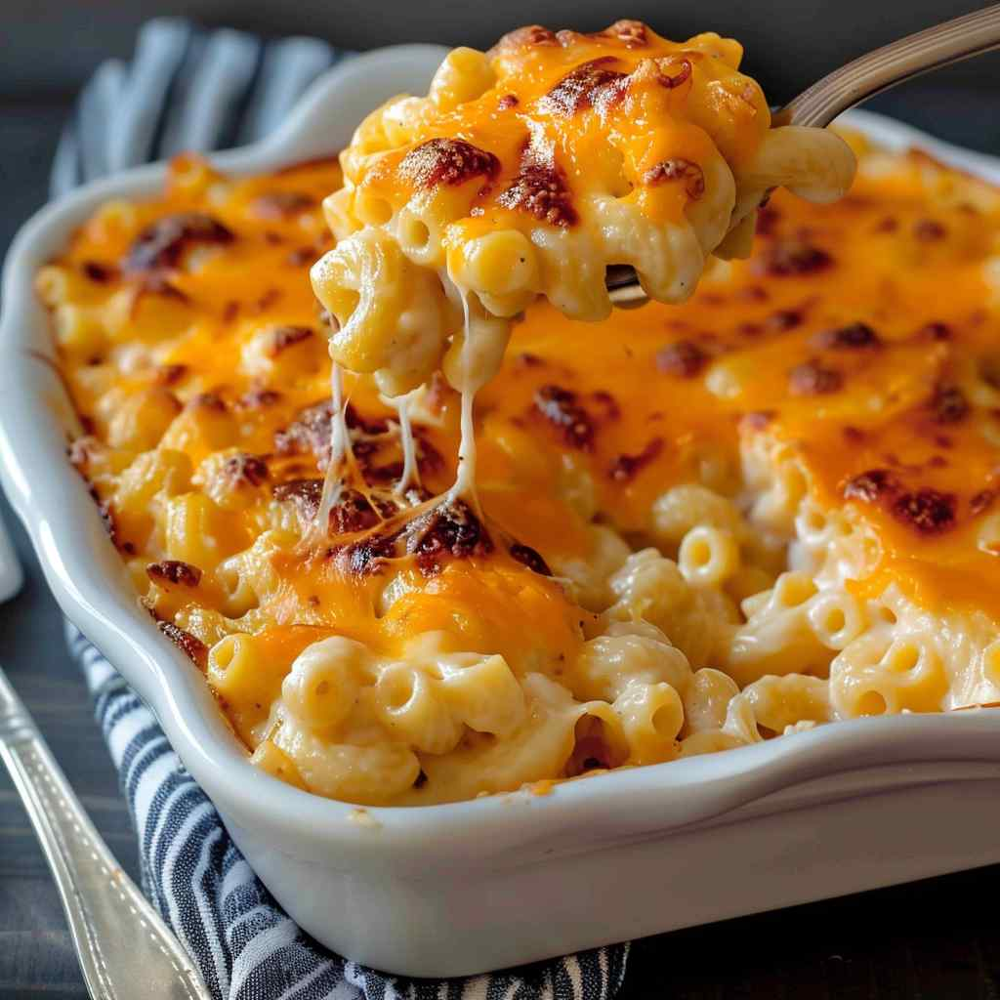

Featured Recipe of the Week
Here at fousts southern kitchen, we are passionate about sharing delicious and comforting recipes that bring joy to your table. Each week, we feature a new recipe that embodies the essence of southern cooking, crafted with love and care. From classic dishes to modern twists on traditional favorites, our featured recipe of the week is sure to inspire your culinary creativity and satisfy your cravings for hearty, flavorful meals. Whether you're a seasoned cook or just starting out in the kitchen, our weekly recipe is designed to be approachable and delicious, making it easy for you to create memorable meals for yourself and your loved ones.
classic mac & cheese

Ingredients
- 8 ounces elbow macaroni
- 2 cups shredded sharp cheddar cheese
- 1/2 cup grated Parmesan cheese
- 3 cups milk
- 1/4 cup butter
- 2 1/2 tablespoons all-purpose flour
- 2 tablespoons butter
- 1/2 cup bread crumbs
- Salt and pepper to taste
Instructions
- Preheat oven to 350°F (175°C). Cook macaroni according to package instructions. Drain and set aside.
- In a saucepan, melt 1/4 cup butter over medium heat. Stir in flour and cook for about 1 minute until it forms a roux.
- Gradually whisk in milk, ensuring there are no lumps. Cook until the sauce thickens, about 5 minutes.
- Remove from heat and stir in cheddar cheese and Parmesan cheese until melted and smooth. Season with salt and pepper.
- Add cooked macaroni to the cheese sauce and stir until well combined.
- Pour the mac and cheese into a greased baking dish. In a small bowl, melt 2 tablespoons of butter and mix with bread crumbs. Sprinkle the breadcrumb mixture evenly over the mac and cheese.
- Bake in the preheated oven for 25-30 minutes, or until the top is golden brown and bubbly. Let it cool for a few minutes before serving.